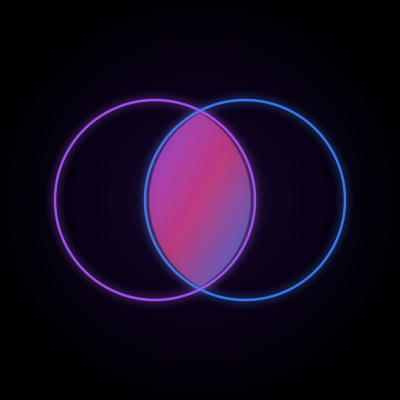
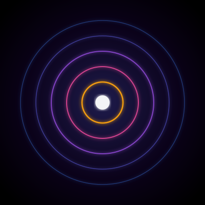
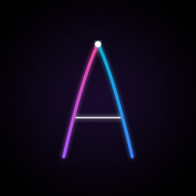

Visualizzazione alle 3 dimensioni in cui Substack mostra l'avatar (rotondo). Scegli quella che ti rappresenta.
profile-vesica.svg

Due cerchi intersecanti — la tensione fertile al centro. Simbolo antico (vesica piscis) che rappresenta l'intersezione tra due verità che producono qualcosa di nuovo. Massima coerenza concettuale con PTM/Antinomia.
profile-deeper-layer.svg

Cerchi concentrici → richiamo diretto al nome della newsletter The Deeper Layer. Il punto bianco al centro è la tensione irriducibile. Pulizia massima a tutte le dimensioni.
profile-tension-a.svg

Due archi divergenti formano una "A" implicita di Antinomia. La barra orizzontale è la tensione che tiene insieme i due opposti. Più espressivo, meno geometrico.